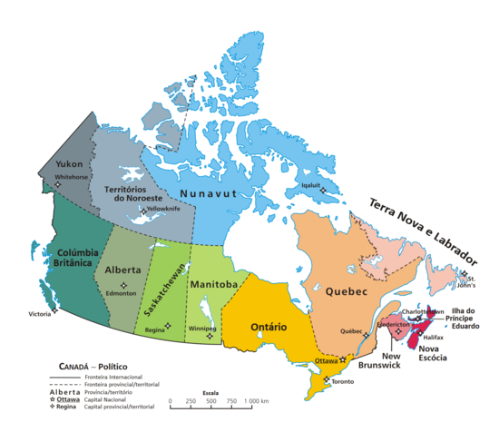

IMAGENS


O Canadá (em inglês: Canada, pronunciado [ˈkænədə]; em francês: Canada, pronunciado: [kanada]) é um país que ocupa grande parte da América do Norte e se estende desde o oceano Atlântico, a leste, até o oceano Pacífico, a oeste. Ao norte o país é limitado pelo oceano Ártico. É o segundo maior país do mundo em área total, superado apenas pela Rússia, e a sua fronteira comum com os Estados Unidos, no sul e no noroeste, é a mais longa fronteira terrestre do mundo.
As terras ocupadas pelo Canadá são habitadas há milênios por diferentes grupos de povos aborígines. Começando no fim do século XV, expedições britânicas, portuguesas e francesas exploraram e, mais tarde, se estabeleceram ao longo da costa Atlântica do país. A França cedeu quase todas as suas colônias na América do Norte em 1763 depois da Guerra dos Sete Anos. Em 1867, com a união de três colônias britânicas da América do Norte em uma confederação, o Canadá foi formado como um domínio federal de quatro províncias. Isto começou com um acréscimo de províncias e territórios e com um processo de aumento de autonomia do Reino Unido. Esta ampliação de autonomia foi salientada pelo Estatuto de Westminster de 1931 e culminou no Canadá Act de 1982, que eliminou os vestígios de dependência jurídica do Parlamento Britânico.
O Canadá é uma federação composta por dez províncias e três territórios, uma democracia parlamentar e uma monarquia constitucional, com a rainha Isabel II como chefe de Estado — um símbolo dos laços históricos do Canadá com o Reino Unido — sendo o governo dirigido por um primeiro-ministro, cargo ocupado atualmente (2018) por Justin Trudeau. É um país bilíngue e multicultural, com o inglês e o francês como línguas oficiais. Um dos países mais desenvolvidos do mundo, o Canadá tem uma economia diversificada, dependente dos seus abundantes recursos naturais e do comércio, particularmente com os Estados Unidos, país com que o Canadá tem um relacionamento longo e complexo. É um membro do G7, do G20, da OTAN, da OCDE, da OMC, da Comunidade das Nações, da Francofonia, da OEA, da APEC e das Nações Unidas.
| British Columbia | Ontário | Quebec |
| Victoria | Ottawa | Montreal |
| Vancouver | Hamilton | Québec |
| Cambridge | ||
| Burnaby | Toronto | Gatineau |
| Vernon | Trois-Rivières | |
| Whistler | Niagara Falls | Marieville |